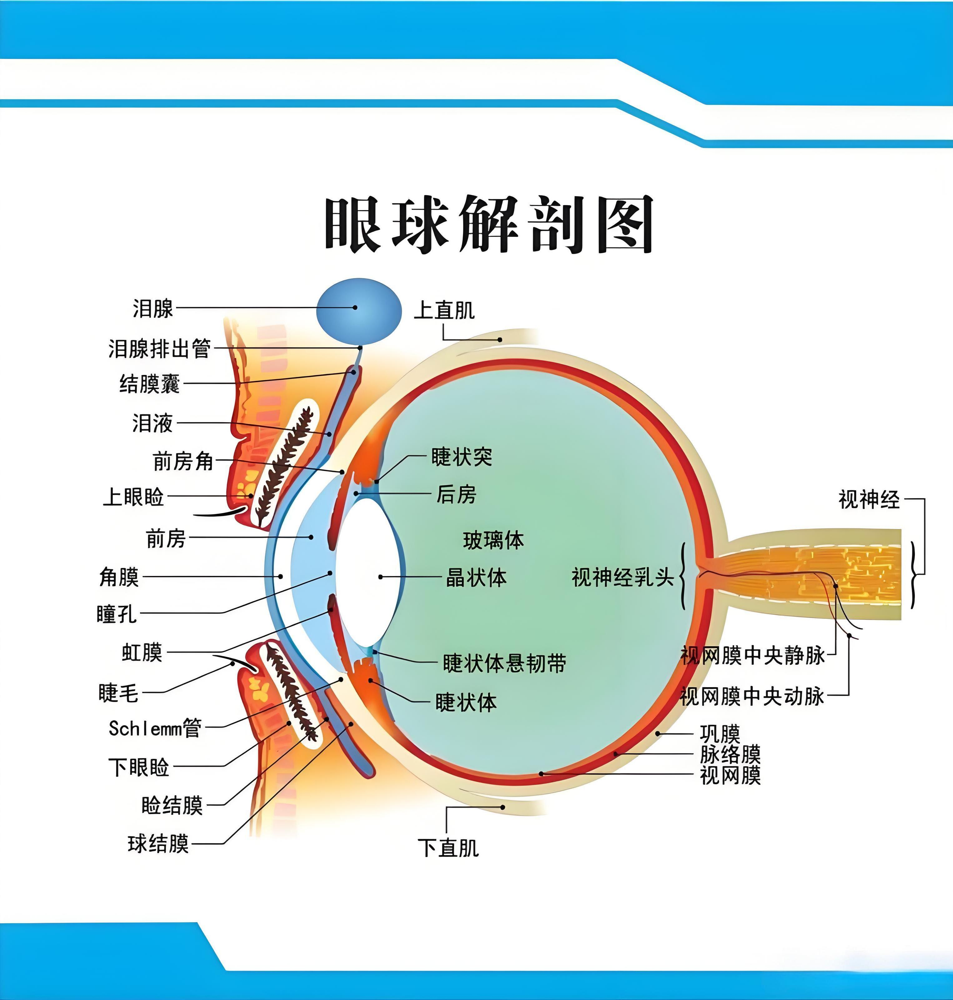
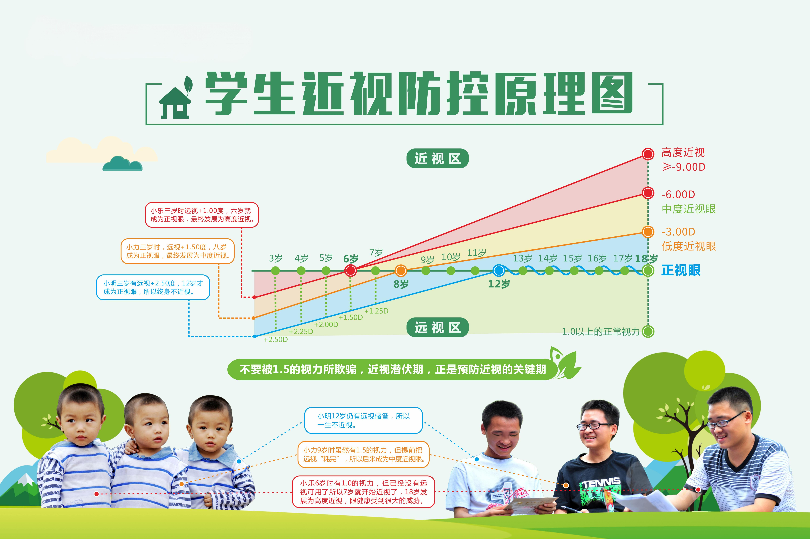

| 年龄 | 对数视力 | 小数视力 | 远视储备 | 眼轴标准值 (mm) | 眼轴上限值 (mm) | 年均增长值 (mm) | 角膜曲率 |
|---|---|---|---|---|---|---|---|
| 6个月 | 4.0 | 0.1 | 350 | 17.0 | 19.0 | 0.6mm | 46.00 |
| 1周岁 | 4.3 | 0.2 | 312 | 17.6 | 20.2 | 0.6mm | 45.00 |
| 2周岁 | 4.5 | 0.3 | 300 | 18.2 | 21.0 | 0.6mm | 44.50 |
| 3周岁 | 4.7 | 0.4 | 250 | 19.0 | 21.5 | 0.5mm | 44.00 |
| 4周岁 | 4.8 | 0.5 | 200 | 19.6 | 21.9 | 0.5mm | 43.70 |
| 5周岁 | 4.8+ | 0.6 | 175 | 20.2 | 22.1 | 0.4mm | 43.50 |
| 6周岁 | 4.9 | 0.7 | 150 | 20.6 | 22.3 | 0.4mm | 43.30 |
| 7周岁 | 5.0 | 0.8+ | 138 | 21.0 | 22.5 | 0.4mm | 43.20 |
| 8周岁 | 5.0 | 1.0 | 125 | 21.2 | 22.6 | 0.4mm | 43.00 |
| 9周岁 | 5.0+ | 1.0 | 112 | 21.4 | 22.7 | 0.4mm | 43.00 |
| 10周岁 | 5.0+ | 1.0+ | 100 | 21.6 | 22.8 | 0.4mm | 43.00 |
| 11周岁 | 5.1 | 1.2 | 50 | 22.0 | 22.9 | 0.3-0.4mm | 43.00 |
| 12周岁 | 5.1 | 1.2 | 25 | 22.4 | 23.0 | 0.3-0.4mm | 43.00 |
| 13周岁 | 5.1+ | 1.2+ | 0 | 22.8 | 23.2 | 0.3mm | 43.00 |
| 14周岁 | 5.1+ | 1.2+ | 0 | 23.1 | 23.4 | 0.3mm | 43.00 |
| 15周岁 | 5.1+ | 1.2+ | 0 | 23.4 | 23.6 | 0.2-0.3mm | 43.00 |
| 16周岁 | 5.1+ | 1.2+ | 0 | 23.6 | 23.9 | 0.2-0.3mm | 43.00 |
| 17周岁 | 5.1+ | 1.2+ | 0 | 23.8 | 24.1 | 0.2mm | 43.00 |

